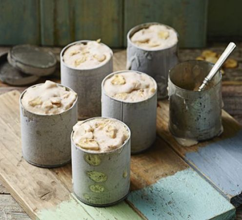
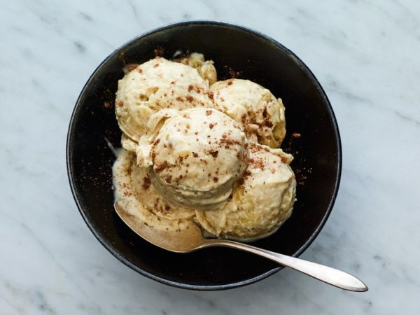
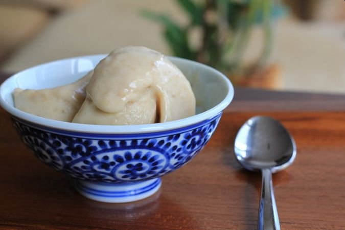
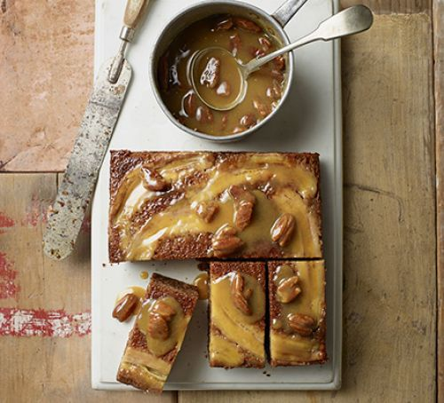
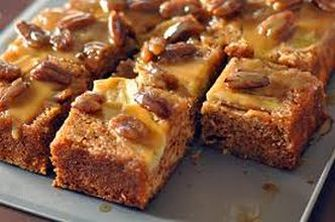
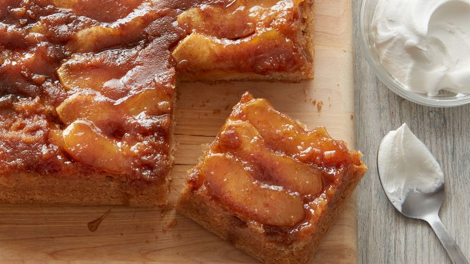
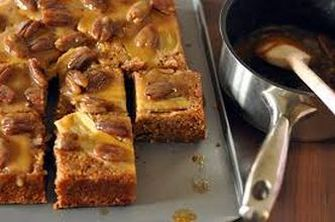
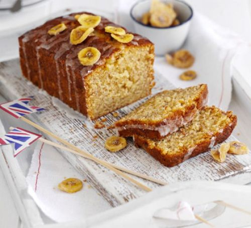
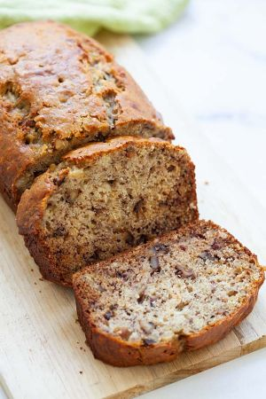
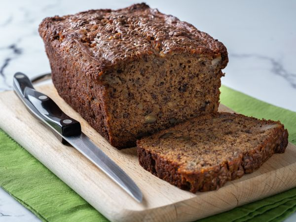

Frozen banana yogurt
|  |  |

|
PREP: 20 MINS
no cook
Serves 8
Easy
| 4 overripe bananas- the blacker the better - about 375 after peeling |
| 500g pot full-fat Greek yogurt |
| 175g condensed milk |
| big handful banana chips |
Step 1 |
| Whizz the flesh from the bananas, yogurt and condensed milk together in a food processor or blender until smooth. Scrape into an ice cream container or loaf tin, or divide between individual pots. |
Step 2 |
| Crush up the banana chips, if using, by tipping them into a food bag and bashing with the end of a rolling pin – like you would biscuits for a cheesecake base. Swirl through the frozen yogurt mix, then cover the container or containers well with cling film and freeze overnight until solid. Will keep for 3 months in the freezer. |
Upside-down banana cake with maple-caramel sauce
|  |  |

|
|  |
Prep:45 mins
Cook:1 hrs 10 mins
Serves 8
Easy
For the cake |
| 100g softened butter, plus extra for greasing |
| 8 tbsp maple syrup |
| 3 small ripe bananas and 1 very overripe banana |
| 200g dark brown soft sugar |
| 4 large eggs |
| 2 tsp vanilla paste or extract |
| 200g self-raising flour |
| 100g pecan, broken into pieces |
| 1 tsp bicarbonate of soda |
| 1 tsp ground cinnamon |
| 200g pot full-fat Greek yogurt, plus extra, or vanilla ice cream, to serve |
For the sauce |
| 100g whole pecan |
| 100g salted butter, diced |
| 100ml double cream |
| 100ml maple syrup |
Step 1 |
| Heat oven to 160C/140C fan/gas 3. Grease a 20cm square cake tin and line the base with baking parchment. For the cake, pour in half the syrup, swirling to coat the bottom. Peel and halve the 3 ripe bananas lengthways and lay, cut-side down, in the tin. |
Step 2 |
| Beat together the butter, sugar, eggs, vanilla and overripe banana with an electric whisk. Tip the flour and pecans into a food processor and pulse until finely ground together. Stir into the butter mixture with the bicarbonate of soda and cinnamon, then stir in the yogurt. Carefully spoon into the tin without dislodging the bananas. Bake the cake for 45 mins-1 hr until a skewer inserted into the centre comes out with only moist crumbs. |
Step 3 |
| Meanwhile, make the sauce. Toast the pecans for 1-2 mins in a pan, add the remaining ingredients and cook until the butter has melted. Then bubble for 5 mins until it has thickened a little. |
Step 4 |
| When the cake is cooked, poke it all over with the skewer – inserting it about halfway into the cake each time. Pour over the remaining maple syrup and allow it to soak in for a few mins, then turn the cake out of the tin, upside-down, onto a serving plate. Reheat the sauce, and serve with Greek yogurt or vanilla ice cream. |
Banana Loaf
|  |  |

|
PREP: 15 MINS
COOK: 40 MINS
CUTS INTO 8-10 SLICES
EASY
| 140g butter, softened, plus extra for the tin |
| 140g caster sugar |
| 2 large eggs, beaten |
| 140g self-raising flour |
| 1 tsp baking powder |
| 2 very ripe bananas, mashed |
| 50g icing sugar |
| handful dried banana chips, for decoration |
Step 1 |
| Heat oven to 180C/160C fan/gas 4. |
Step 2 |
| Butter a 2lb loaf tin and line the base and sides with baking parchment. |
Step 3 |
| Cream 140g softened butter and 140g caster sugar until light and fluffy, then slowly add 2 beaten large eggs with a little of the 140g flour. |
Step 4 |
| Fold in the remaining flour, 1 tsp baking powder and 2 mashed bananas. |
Step 5 |
| Pour into the tin and bake for about 30 mins until a skewer comes out clean. |
Step 6 |
| Cool in the tin for 10 mins, then remove to a wire rack. |
Step 7 |
| Mix 50g icing sugar with 2-3 tsp water to make a runny icing. |
Step 8 |
| Drizzle the icing across the top of the cake and decorate with a handful of banana chips. |